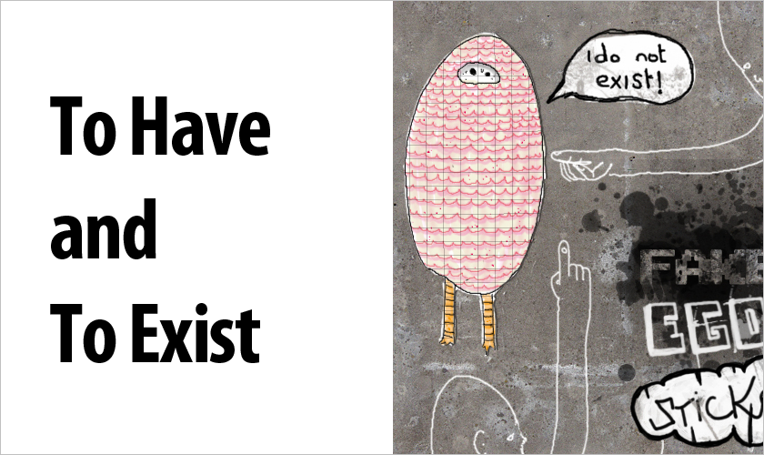

In this lesson, we’re going to learn about two verbs that you’ve already kinda-sorta learned. They are, however, complicated (and unique) enough to get their own chapter.
ある（あります）→ to have, to exist (for non-living / inanimate things or objects)
いる（います）→ to have, to exist (for the living)
Before we can actually use these verbs, however, we’ll have to learn a little bit more about the particle が and how it is used with verbs. Right now, you know how to use the particle を with a verb. When using を, you know that you are doing something to the object (whatever comes before the を).
すし を 食べます
To eat sushi. You are directly doing something to the sushi. i.e., your actions (eating) are directly affecting the object (the sushi).日本語 を 話します
To speak Japanese. You are speaking the Japanese, so you are directly involved (which is why you use を in this case).
Using が instead of を can be a whole other monster. A lot of people get confused and aren’t sure which to use in some situations (do I use を or do I use が?). It’s kind of like が vs は, though not quite as bad. A lot easier, in fact, once you get used to it.
When you use が with a verb, it means you aren’t directly doing something to the object. Either something just happened, or something is just existing. You aren’t doing anything to anything, but it’s still happening. Take a look at these examples:
犬 が います
There is a dog (i.e. the dog is existing). You aren’t making the dog exist, so you would use the が particle. Also, notice that I used います instead of あります. います is used for living things, and a dog is a living thing.ボッビーさん が 出た
Bobby-san left. You didn’t make Bobby leave, and he left on his own. He passively left without any effort put forth on your part, therefor you’d use が.テレビ が 消えた（きえた）
The television turned off. You certainly didn’t turn it off. Maybe the television broke, maybe the power went out, but you didn’t do anything to it directly.テレビ を 消した（けした）
(I) turned the television off. Notice how we’re using an を particle now? That’s because I was the one who turned it off, and I was directly involved in the action.ラジオ が 壊れた（こわれた）
The radio is/was broken. Once again, the radio just broke on its own, and I had nothing to do with it.
One thing you might notice is how some verbs change depending on your involvement in the action. きえた vs けした is one example. These are “Transitive and Intransitive” verbs, and will be taught in the next chapter. For now, though, the important thing is you understand the difference between が and を, and how they relate to verbs. You’ll also see (though it’s a little less common) the particle は being used instead of が. Same は vs. が rules apply.
は emphasizes what comes after it and talks about something
が emphasizes what comes before it and identifies something
Of course, since we’re using verbs here, you’ll be identifying things a lot more than you will talk about something. The important part of most verb sentences is what comes before the が, and not after. You’ll see は being used from time to time, but が is going to be the safest bet when you aren’t sure (and part of knowing which one to use will come from experience, too). With the verbs いる and ある (that’s what we’re supposed to be practicing in this lesson), you can pretty much count on them using が almost all of the time. You don’t have a direct effect on the existence of something (usually, anyways), right?
ある vs. いる
猫（ねこ）が いる
“There is a cat (a cat exists).“ You might say this when you’re walking about, and you see a cat somewhere. “Oh, there’s a cat!”ペン が ある
“I have a pen.” Notice how there’s more of a connotation of owning / having something when you use ある? This is because it’s associated with things and inanimate objects. You wouldn’t want to say ボッビーさんがある, because that would be just wrong, and mean!私 の 部屋（へや）に ラジオ が あります
“In my room, I have a radio.“ あります is just the formal / neutral version of ある. Use ある to be more casual and あります when you aren’t sure / when you need to be more formal.３時 に 家 に いました
“At 3 o’clock, I was in my house.” You can also use the に particle, but the sentence better hinge on location, like this one. Let’s look at one more like it.仕事（しごと）にいます
“I’m at my job / work.”５００円 が ある
“I have 500 yen.”あそこ の 部屋 に テレビ が ある。
“In that room over there I have a television.”あそこ の 部屋 に 猫 が いる。
“In that room over there, there is a cat.“ Almost identical to the sentence above, but we use いる instead of ある because your cat is allllive!ボッビーさん は いますか。
Is Bobby-san there? This is a great pattern to learn. If you’re looking for someone, [name]+はいますか is like gold in your mouth. Notice how we use the particle は instead of が on this one. I told you は was rarer when used with verbs, but it doesn’t mean you won’t see it occasionally! We aren’t identifying Bobby, and Bobby isn’t the most important part of this sentence. We want to know if he’s there (i.e. existing in this location), and は puts the emphasis on that (which is why we’re using it here).ペン が ありますか。
Do you have a pen? Similar to the sentence above, except this time we’re asking about an inanimate object. In this case, we use が because we need to identify what it is we’re asking for. When talking about ボッビー, it was expected that he was supposed to be there (maybe we’re calling his office), so we don’t need to identify him. With a pen, we need to identify it and put the emphasis on it, because it wasn’t already expected to exist in that location (or you don’t know if it is supposed to exist there at all).
あります and います don’t come naturally to most learners, and experience will be the best way to hone your ある and いる skills. You’ll see these a lot, so make sure you analyze how and why they are being used, like the above examples. Do this for a little while (and really spend a few minutes on each example you run into) and you’ll feel really comfortable really fast. Most people gloss over all the different ways ある and いる are used, which means they learn all the different ways they can be used very slowly (and make a lot more mistakes than they should!).
Story: Part 3
A Flashback To The Dinosaur Age
As per usual, we’re going to focus the second half of this lesson on learning with a story. In part three of this “adventure” (if you can call it that), we visit 林田先生’s dreams, where he goes back to the day he lost his poor wife, あゆみさん. The grammar focus of this episode will be ある and いる with some new and review grammar thrown in. After the story, there will be a line-by-line explanation to help you understand what went on (along with the concepts behind everything as well). First, we have to introduce あゆみさん. Because this is a flashback, she’s a lot younger than the (current) 林田先生. Let’s take a look back in time… [cue time travel music here]
↓↓↓↓↓↓↓↓↓↓↓↓↓↓↓↓↓↓↓
林田先生： オっ！あゆみちゃん！できた！できたよ！タイムトリップしたよ！
あゆみさん： 頭が痛い．．．
林田先生： これはすごいよ！あそこに火山がある！
あゆみさん： 火山は大嫌い．．．
林田先生： あゆみちゃん、ビデオカメラはある？
あゆみさん： あるよ。ナップザックはどこかな．．．
Hayashida-sensei finds the knapsack, and pulls the video camera out to start recording. He gets up and starts walking.
あゆみさん： どこに行くの？
林田先生： 火山に行くつもりだよ。あゆみちゃんも行く？
あゆみさん： ええ、行くよ。
Ayumi-san gets up and starts walking with Hayashida-sensei.
あゆみさん： ここはすごいね．．．
林田先生： 当たり前じゃない？過去にいるんだから。
あゆみさん： 恐竜がいると思う？
林田先生： いる．．．いや、いない。。。
あゆみさん： どっち？いる？いない？
Hayashida-sensei looks up to see some kind of T-Rex. He points to the dinosaur.
林田先生： いる。
あゆみさん： なぜ「いる」とおもーマイゴッド！
Hayashida-Sensei woke up with a jolt. He could already tell that today was going to be a hallucination filled day.
| Original | Kana |
English |
| できた | できた | able/could to do something |
| タイムトリップする | タイムトリップする | to time travel |
| 頭 | あたま | head |
| 痛い | いたい | hurt / pain |
| すごい | すごい | amazing |
| あそこ | あそこ | over there |
| 火山 | かざん | volcano |
| 大嫌い | だいきらい | to really really hate |
| ビデオカメラ | ビデオカメラ | video camera |
| ナップサック | ナップサック | napsack |
| 行く | いく | to go |
| 当たり前 | あたりまえ | natural, reasonable, obvious |
| 過去 | かこ | past |
| 恐竜 | きょうりゅう | dinosaur |
| 思う | おもう | to think |
| いや | いや | no |
| どっち | どっち | which |
Line-By-Line Explanation
Let’s take a look at everything line-by-line. The important thing isn’t that you memorize every line, but that you memorize and learn the concepts behind them (so you can make customizations on them whenever you want).
林田先生： オっ！あゆみちゃん！できた！できたよ！タイムトリップしたよ！
“Oh! Ayumi-chan! We did it! We did it! We time traveled!”
できた、できたよ! You don’t know できた quite yet, but it means “I/we did it!” or “I completed (something)” and is often said when you’ve, well, done or finished something. For example, when you’ve finished cooking dinner (you Japanese house wife, you), you would say 「ごはんできたよ！」which basically means “I finished the meal!” Besides this, できる (present tense of できた) can express your ability to do something. テニスができるよ would be “I can do (play) tennis.”
あゆみさん： 頭が痛い．．．
“My head hurts…”
頭が痛い ＝ My head hurts, so, as you can imagine, if you take that noun and replace it with another noun, something else can hurt too. 足（あし）が痛い means “my foot/leg hurts.” 腕（うで）が痛い means my arm hurts. The list can go on and on. Pick a body part. Make it hurt. Ouch!
林田先生： これはすごいよ！あそこに火山がある！
“This is amazing! There’s a volcano over there!”
Hopefully you still remember the sentence-ender よ. It adds emphasis to what someone is saying.
あゆみさん： 火山は大嫌い．．．
“I hate volcanoes”
Back in the day, you learned [noun]+が大嫌い. You’ll notice we’re using the particle は here. We’ve already identified and established that there’s a volcano, and now we’re talking about the volcano (i.e. the important part is what comes after the particle). That’s why we’re using は instead of が here, because は places its importance on what comes after it.
林田先生： あゆみちゃん、ビデオカメラはある？
“Ayumi, do you have the video camera?”
Pretty simple and self explanatory if you read the chapter. Hayashida is asking if she has the video camera. What other things could you ask for?
あゆみさん： あるよ。ナップザックはどこかな．．．
“I have it. I wonder where the napsack is…”
あるよ = I have it. The only new thing in this sentence is the end (かな…). By adding かな (and kind of trailing off like you’re wondering something), you’re basically saying “I wonder…something something something.” For example: 東京に行くかな．．．means “Maybe / I wonder if I’ll go to Tokyo…” すしを食べるかな．．．means “I wonder if I’ll eat sushi.” You can pretty much put かな onto the end of any sentence, and then it will make it into a sentence where you are wondering about something. 日本語を習えるかな．．．
あゆみさん： どこに行くの？
“Where will you go?”
どこに行く is pretty self explanatory, but the の on the end is a bit weird. This is often used by women (it’s more feminine) along with questions. 食べるの？ Will you eat it? 暖かいの？Is it warm? If you’re a guy, you probably don’t want to be のing it up too much like this, though occasionally it’s fine. It’s just used by women a lot more and more associated with feminine speech.
林田先生： 火 山に行くつもりだよ。あゆみちゃんも行く？
“I plan to go to the volcano. Will you go as well?”
Do you remember つもり… to plan to do something? Hayashida-sensei plans to go to the volcano.
The も particle after Ayumi’s name is probably new for you. も means “as well” and can be placed on the end of nouns. コウイチさんも？ Koichi-san too / as well? すしも食べる？ Will you eat sushi as well? We’ll cover the particle も in more detail as we go along, but definitely create a few practice sentences and use it in a Lang-8 post or two to get the gist of it. Also, you’ll see something similar to も crop up from time to time. This is probably もう, and means something completely different. Don’t worry about it for now, just know that they’re different grammar points.
あゆみさん： ええ、行くよ。
“Yep, I’ll go.”
ええ is a casual way to say “yes.” Make sure you have a “positive tone” when you say it though, otherwise it might just sound like you’re moaning.
あゆみさん： ここはすごいね．．．
“It’s amazing here, isn’t it?”
ね, as you’ll remember, is a sentence-ender that you use when you’re searching for affirmation from the other person.
林田先生： 当たり前じゃない？過去にいるんだから。
“Of course it is. It’s because we’re in the past!”
当たり前 on its own means “it’s obvious” or “it’s natural.” In this sentence, we’ve added a じゃない (negative tense for nouns) to it. The English translation can get a bit clunky if we did things literally, which is why I’m explaining it here. It’s like adding “is it not?” to the sentence, so if we translated literally, we’d get: “It’s obvious, is it not?” A nicer translation, though, is “Of course it is” (you have to say it with a snobby tone for full effect).
過去にいるんだから is also full of new things. 過去にいる means “in the past,” which I think you can figure out, but the んだから is totally weird and new. Let’s break it up into all its tiny pieces.
ん ＝ a casual の. This の particle is actually being used to change a phrase into a subject (the subject in this sentence would be 過去にいる).
だ ＝ a casual です. Remember だ? Because we’ve turned this sentence into its own “subject” we can treat the sentence like a noun. Therefor, we want to add だ to the end of it. Now, you may think that you could say ですから, but this sounds a bit clunky (works, but still kind of a garble-mouth). Remember, the level of formality in a sentence is dictated by the end of the sentence, and not all the stuff inside of it (at least grammar-wise. Words can still be totally informal and come off that way no matter how formal your grammar is), which is why we’re using だ instead of です in this sentence.
から ＝ because. A lot of people think of だから as it’s own word (“it is because…”) but we’re breaking it up into its own parts. You can add から onto the end of verbs too (without the だ, unless you add the んだ／のだ). We’ll go over this grammar point in much more detail, but this should get you started.
あゆみさん： 恐竜がいると思う？
“Do you think there are dinosaurs?”
と思う is a great grammar point. と is a particle you don’t know yet (but will get to know soon). と indicates thoughts or quotes, which is why we’re using it with the verb “to think.” 食べると思う？ Do you think you will eat it? 「My name is Bob」と言った. (He) said “my name is Bob.” You’ll see this a lot, but for the most part you can just remember that when you use the verbs 思う (to think) or 言う (to say), there’s a pretty good likelihood you’ll be using the particle と instead of something else.
林田先生： いる．．．いや、いない。。。
“There are… no, wait, there aren’t…”
いや in this sentence is a casual way to say “no.”
あゆみさん： どっ ち？いる？いない？
“Which one? Are there or aren’t there?”
どっちが好き？ Which one do you like? どっちのベッドを使う？ Which bed will you use? どっちを買う？ Which will you buy?
林田先生： いる。
“There are (dinosaurs)!” (they exist!)
Uh oh. This doesn’t sound too good.
あゆみさん： なぜ「いる」とおもーマイゴッド！
“Why do you think they existohmygod!”
なぜ is “why,” as you learned in a previous story section. The last part might be confusing, did you figure it out on your own? I’ve just smashed together the words と思う and オー・マイ・ゴッド. If you read it out phonetically, you can see how they’re meshed together. Basically, she’s changing what she’s saying mid-word because she saw something scary… I’m guessing some kind of dinosaur.
Before You Move On:
- Know the difference between ある and いる and how they are used. Come up with some practice sentences with help from the examples above.
- Make sure you understand everything from the story.
- Any new grammar points should be written down with your own explanation (to help you remember it).
- Studying the vocab is optional – you should know around half of the vocab, and the other half shouldn’t take too much time to learn if you want to. Some of the words aren’t all that common, though. You’ve been warned.
Transitive, Intransitive, Confusing, Verbs →